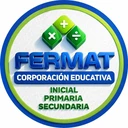

FERMATGestión de contenidoVolver al sitio ↗Añade novedades, fotografías y diplomas, o actualiza el catálogo completo. Este editor prepara archivos para publicar; los cambios no se guardan en el sitio hasta reemplazar los archivos y volver a publicarlo.
Cómo actualizar: coloca los documentos e imágenes nuevos en la carpeta assets/ del sitio. Aquí escribe su ruta, por ejemplo assets/premiacion-2026.jpg, o un enlace HTTPS. Descarga ambos archivos de contenido y reemplázalos en la carpeta del sitio antes de publicar.
Abre un archivo contenido.json descargado antes para continuar trabajando.
Esta acción reemplaza los datos del editor. Los archivos del sitio publicado no se modifican.Modifica los datos JSON y pulsa Validar y aplicar. Conserva los nombres de campos existentes. Las fechas siguen el formato AAAA-MM-DD.
El editor trabaja en esta página. Descarga tus cambios antes de cerrarla. No se envía información a terceros.